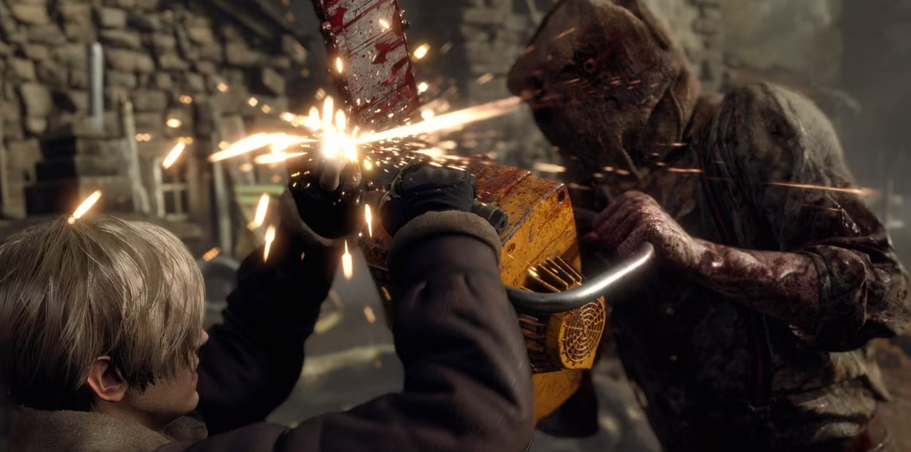
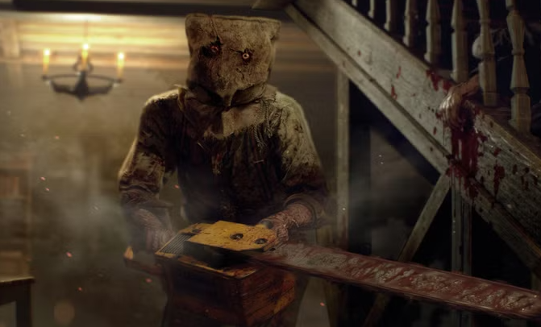

RESIDENT EVIL 4 REMAKE
Transformasi Resident Evil 4
Resident Evil 4 telah lama dikenal sebagai salah satu game horor survival paling berpengaruh dalam sejarah video game. Sejak perilisannya pada tahun 2005, game ini telah menetapkan standar baru untuk genre action-horror dan mempengaruhi banyak game yang dirilis setelahnya. Melihat kesuksesan remake dari Resident Evil 2 dan 3, Capcom akhirnya mengambil langkah berani untuk memperbarui masterpiece ini, menghadirkan versi remake yang telah dinantikan oleh para penggemar selama bertahun-tahun.
Salah satu aspek paling mencolok dari Resident Evil 4 Remake adalah peningkatan drastis dalam hal visual dan grafis. Engine RE yang terbaru menghadirkan detail yang mencengangkan, dari tekstur pakaian yang realistis hingga efek cuaca yang dinamis. Sistem kontrol yang telah diperbarui memberikan pengalaman bermain yang lebih responsif, memungkinkan pemain untuk bergerak dan bertarung dengan lebih lancar. Desain lingkungan yang gelap dan mencekam, dipadu dengan sistem pencahayaan yang dinamis dan efek suara yang memukau, menciptakan atmosfer horor yang jauh lebih intens dari versi originalnya.
Display dan Narasi
Gameplay dalam versi remake ini menghadirkan pengalaman yang lebih dinamis dan menantang. Para Ganado, musuh utama dalam game ini, kini memiliki AI yang lebih cerdas dan pola serangan yang lebih tidak terduga. Mereka dapat berkoordinasi dalam kelompok dan menggunakan lingkungan sekitar dengan lebih efektif. Penambahan mekanisme stealth memberikan dimensi baru dalam gameplay, memungkinkan pemain untuk mendekati situasi dengan lebih strategis. Sistem parry menggunakan pisau dan variasi serangan yang lebih beragam menambah kedalaman pada sistem pertarungan.
Dari segi narasi, Resident Evil 4 Remake berhasil memperdalam karakterisasi para tokohnya. Leon S. Kennedy tampil dengan kepribadian yang lebih matang dan kompleks, dengan dialog yang lebih natural dan emosional. Ashley Graham, yang dalam versi original sering dianggap sebagai beban, kini memiliki peran yang lebih integral dalam cerita dengan karakterisasi yang lebih kuat dan relatif dapat membantu dalam situasi tertentu.
Aspek horor dalam game ini mencapai level baru berkat teknologi modern. Penggunaan Ray Tracing menciptakan bayangan dan pencahayaan yang lebih realistis, sementara detail tekstur yang tinggi membuat setiap sudut desa dan kastil terasa hidup dan mengancam. Suasana mencekam dipertegas dengan efek visual yang memukau, seperti darah yang lebih realistis dan efek gore yang lebih detail.

Pujian dan Kritik
Tanggapan komunitas terhadap Resident Evil 4 Remake secara umum sangat positif. Para penggemar franchise memuji keseimbangan antara elemen nostalgik dan pembaruan modern. Beberapa kritik muncul terkait perubahan certain cutscene dan boss fight, namun mayoritas pemain sepakat bahwa perubahan ini justru memperkaya pengalaman bermain secara keseluruhan.
Resident Evil 4 Remake membuktikan bahwa modernisasi game klasik dapat dilakukan dengan sukses ketika dikerjakan dengan penuh kehati-hatian dan penghormatan terhadap materi sumber. Game ini tidak hanya berhasil memenuhi ekspektasi tinggi dari para penggemar, tetapi juga menetapkan standar baru untuk remake game di masa depan. Keberhasilan ini semakin mengukuhkan posisi Resident Evil sebagai franchise horror survival terdepan dalam industri game.
Karakter
Leon Scott Kennedy
Ashley Graham
Luis Sera

Ada Wong